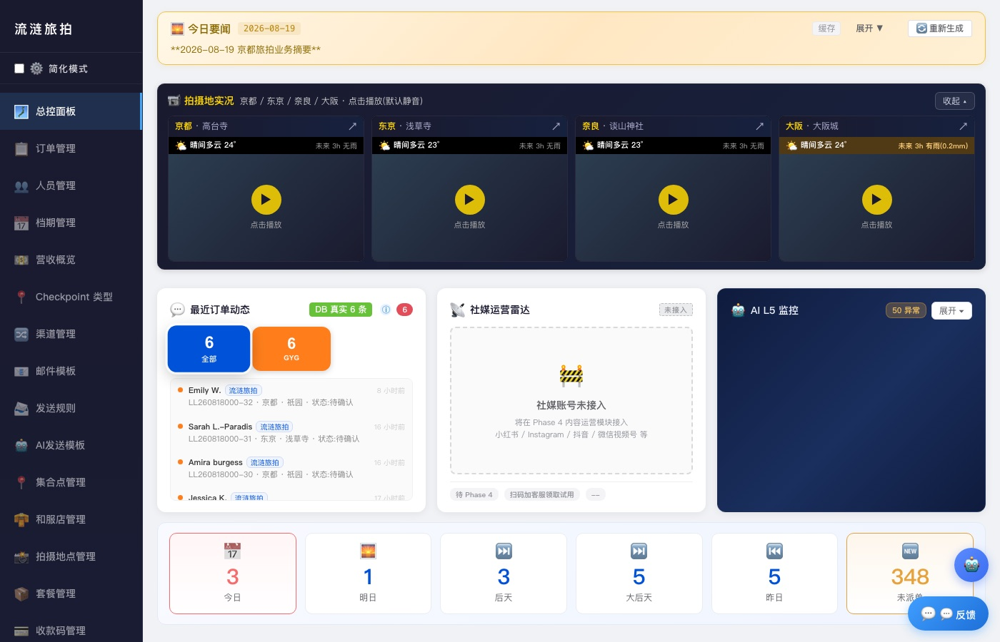
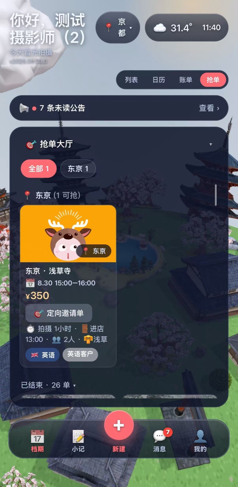

订单文本解析
把平台邮件、客人消息这类非结构化文本一键抽成表单字段。只抽取,不计算——时间加减这类有确定规则的事由系统硬算,不交给模型。
产品作品集 · 0 → 1 独立交付
客人在日本约拍照,从接单到交片,交给系统自动跑
选一个章节进入 ↓

运营总控台 我和客服每天用的后台:接单、找摄影师、盯进度、月底算钱。 进入 → 核心主线 · 二
榴档期 App 摄影师手机上的那一端:报空档、接活、传照片、查收入。 进入 →其余章节
项目介绍
先讲清楚:这门生意是什么、难在哪、这套系统做了什么。
客人来日本旅行,想在当地约摄影师拍一组照片——这行叫旅拍。
难在协调:订单来自多个平台,摄影师散在各城市、多是兼职,过去全靠客服一个个问。
这套系统把协调交给机器,三个端各管一段。
静态分镜(系统已关闭动效)
传统:每一步都要问人;本系统:一条链接自助走完。
静态分镜(系统已关闭动效)
传统:41 分钟仍无着落;本系统:一次推送,中位数 2.0 分钟成交。
两部演示由站内真实截图驱动,各约 14 秒无缝循环,右上角可暂停。
传统模式的代价
传统派单是客服逐个私聊:问一个、等一次回复,回了还要核对档期。人越多,客服越是瓶颈——而且这个瓶颈靠加班解决不了。
74.7% 的派单任务,客服只做一个动作——发布。剩下的由摄影师自己抢完:派单从「客服的工作量」变成「系统的吞吐量」。
抢单成交率 = 被摄影师主动接走的抢单任务数 ÷ 已发起的抢单任务总数。统计范围:2026-05 至 2026-08 生产环境。分子分母的排除项(已取消 / 中途改手动指派的任务是否计入)待生产库核验后补全
抢单派发监控截图
建议文件名:console-grab-stats.png ｜ 建议 1400×900 ｜ 需打码:客人信息与报酬金额
传统模式的代价
传统模式的等待长什么样?本页派单调度屏的示意时间轴里:8 分钟未回复,23 分钟档期冲突,41 分钟仍在等。
一半的订单 2 分钟内被接走。不是快了几倍,是把「等人回复」这个环节从流程里拿掉了。
取每个成交抢单任务的(接单时刻 − 发布时刻),对全部成交任务取中位数(不是平均数,避免个别长尾把数字拉高)。统计窗口起止、以及循环再推的场次如何计入,待生产库核验后补全
历史抢单记录截图
建议文件名:console-grab-timing.png ｜ 建议 1400×900 ｜ 需打码:客人信息与摄影师姓名
传统模式的代价
传统模式没人接就要再问一轮,每一轮都是客服的时间,轮次不可控。
96% 的成交单,一次推送就够了。二次触达在这套系统里是异常,不是常态。
首轮推送即成交的抢单任务数 ÷ 成交的抢单任务数。分母取「成交任务」还是「全部已发起任务」,以及再推场次的界定,待生产库核验后补全
传统模式的代价
新机制上线的常见命运是没人用——尤其当用户是不坐班、不看后台的自由职业者。
抢单上线两个月,承接了全部派单量的三分之一。
同期由抢单方式成交的派单数 ÷ 同期全部派单数(含手动指派)。统计窗口:抢单功能上线后的头两个月。窗口的精确起止日期待生产库核验后补全
导览
订单先全部进这个后台,再分给摄影师、发给客人——没有第二个开单的地方。
这是什么
把旅拍订单从进单到结算全程自动流转的业务系统,由三个端组成。
给谁用
中小型旅拍工作室,以及没有坐班团队却要跨城市按时交付的经营者。
解决什么
把压在负责人一个人身上的问档期、派活、催交付、算账,变成系统自动跑。
平台来的单:Viator、GetYourGuide、携程各是一个独立渠道,默认全额预付。平台不直接写进系统——运营在总控台建单时选定渠道,这条单从第一步起就带上该渠道自己的支付与交付规则。
3 个平台渠道 · 默认全额预付
自己的私域来源:自营直客与小红书。自营单的支付方式按单设定(可分两笔收,也可一次付清),与平台单固定的全额预付不同——但走的建单入口完全一样,同样必须先进总控台。
2 个自有渠道 · 支付方式按单设定
工作室的指挥室,也是系统里唯一的订单入口:没有面向客人或平台的公开建单接口,任何一条订单——不论来自平台还是自营——都由运营在这里建单落库。
建单的同一个事务里,系统按「渠道 × 订单类型」套用这条单的交付节点模板,并顺手生成客人交付页的专属链接。此后的派单、交付、结算,也全都从这里发出。
437 个接口 · 86 张生产在用数据表
摄影师的移动工作台:填了档期才有接单资格。总控台把派单任务推下来,抢单大厅报酬前置、先到先得;抢到的那一刻系统直接占用档期、把摄影师写进这条订单、同步下架该任务——不需要任何人再回总控台登记一次。
74.7% 抢单成交率 · iOS 已上架 App Store
客人的免登录第三端:链接由总控台在建单时生成、再由运营分享给客人,不装 App、不注册。进度自查每 30 秒自动刷新;按编号提交精修需求、一键验收与提返修,每一步都自动回写这条订单的状态并通知下一棒。
三方同页 · 每步自动回写
同一份数据,两个视角——谁看到什么,由角色权限决定,不由设备决定。摄影师角色看得到履约所需的一切——时间、地点、时长、报酬;看不到客人隐私与订单金额。这是设计选择,不是技术限制:字段是一条条决定要不要下发的,默认不给,要给必须有履约上的理由。
总控台与 App 同屏对照实拍
建议文件名:console-app-mirror.png ｜ 建议 1600×900 ｜ 需打码:客人姓名、电话、订单金额
旅拍这门生意有个天然结构:订单来自多个平台,摄影师与精修师大多是分散在各地的兼职或自由职业者。工作室手上未必有坐班团队,却要在多个城市按时交付。
于是所有协调都压在人身上:在群里问谁有空,在 Excel 里记订单,在聊天记录里翻价格。人一多、单一多,负责人本人就成了瓶颈。
这套系统解决的正是这个结构问题——把分散的供给、多渠道的订单、跨城市的履约收进一条自动流转的链路:订单自动进系统、派单自动找人、拍完自动催交付、月底自动出账。
一个人盯着几十个单和几十个人,全靠记忆与聊天记录。
一个后台看全,派单与结算自动跑。
被动等派单,不知道有哪些活、报酬多少。
手机上自己看单自己抢,报酬前置、收入可查。
任务从聊天里来,链接和要求散落各处。
任务自动派发,交付页上一站完成。
拍完了不知道进度,反复问客服。
免登录进度页,填编号提交精修需求与验收。
下面这条线是整个系统的主干,也是这个页面的目录:点任意一步,直接跳到讲它的那一章。
管理端 榴档期 App 客人 标「自动」= 这一步系统自己跑
核心主线 · 一
工作室的活全在这一个后台里:接单、找摄影师、交片子、算钱。
旅拍的难点不在获客,在履约——订单从多个渠道进来,摄影师分散各地、不坐班也不盯后台。
整段订单文本粘贴进来,AI 自动解析成表单字段,人工核对后保存。
建单环节全程 2–4 分钟,确认信自动发出、订单自动进派单池。
传统模式
需开 3 个工具 ｜ 沟通轮次不可控 ｜ 300 单规模需 3 人
榴档期
全程 2–4 分钟 ｜ 一个界面完成 ｜ 300 单规模仅需 1 人
订单文本解析界面截图
建议文件名:console-ai-parse.png ｜ 建议 1400×900 ｜ 需打码:原文中的客人姓名、电话、金额
订单管理页 · 订单表截图
建议文件名:console-order-edit.png ｜ 建议 1400×900 ｜ 需打码:客人姓名、电话、金额
总控台订单列表页截图
建议文件名:console-orders-list.png ｜ 建议 1400×900 ｜ ★画面必须看到订单表格的多行数据(订单号/客人/时间/金额列)★ ｜ 打码与否自定
一张订单从进系统到完结,全程有据可查。
非结构化文本进,结构化字段出,人只做核对
把平台邮件、客人消息这类非结构化文本一键抽成表单字段。只抽取,不计算——时间加减这类有确定规则的事由系统硬算,不交给模型。
客服每次修正 AI 填错的字段,系统静默记录成一条纠错样本。纠错就发生在本来要做的核对里,不需要额外操作。
异常处理建议、天气行动建议、邮件草稿生成。这三处只产出建议或草稿,发不发、按不按由人决定。
AI 替代的是机械劳动,不是判断——每一处都保留了人工闸门。
替代机械劳动,不替代判断。
第三步是人工闸门:AI 填的表必须经人确认才入库
把「客服逐个打电话问谁能接」变成「一次推送、先到先得」。
四道硬门槛自动圈人,评分梯队分层放号,多人同抢系统保证恰好一人成功。
74.7%抢单成交率2.0 分钟接单时长中位数32.9%上线两个月的承接占比口径见数字与口径 →
传统:逐个私聊,串行等待
沟通量随人数线性增长,客服成为瓶颈
本系统:一次推送,并行竞抢
2 分钟成交 · 并发保证恰好一人成功
沟通量与人数无关,客服只需发布一次
上方时间轴就是传统派单的日常:逐个私聊,41 分钟过去,问到第 4 个人仍然没空。人越多,客服越是瓶颈。
上方串行时间轴里:8 分钟未回复,23 分钟档期冲突,41 分钟仍在等——每一分钟都是客服守在微信前的时间。
传统模式没人接就要再问一轮,每一轮都是客服的时间,轮次不可控。
新机制上线的常见命运是没人用——尤其当用户是不坐班、不看后台的自由职业者。
四个条件同时满足才进候选池。
覆盖该城市、当天填了档期且覆盖时段、该时段没有已接的单、评分达标。
人脑记不住几十个人的城市、档期和水平,只会退化成"只问最熟的三五个人"。
多人同点,系统保证恰好一人成功,其余人立即收到提示,五人同抢实测验证过。
群里喊"我接"做不到——时间戳只精确到秒。"先到先得"保证不了,就只是说法。
先只对高评分档开放,到点自动往下放,最多 6 档。
用时间差,不用准入门槛——低分者也接得到单,只是晚一点,新人的入口就保住了。
阶梯发布梯队配置截图(运营总控台)
建议文件名:console-tier-setting.png ｜ 建议 1200×900 ｜ 需打码:摄影师姓名与评分
上图:评分梯队「阶梯发布」的配置界面,位于运营总控台的发起抢单弹窗内。摄影师端没有这个界面——梯队只体现为「没到点就看不见这个单」。
客人指名或需要特定风格时可定向发单:广播池不参与,只有被点名的人收到。能绕过评分与城市,但在职、无档期冲突两道硬闸仍生效;谁没入选必须逐条说明原因,绝不静默丢弃。
急单可跳过完整建单直接发,走独立高优先级通道(带声音震动)。普通通知会被手机延迟聚合,"两小时后开拍"晚到 20 分钟就没意义了。急单占比 9.3%。
没人接的单自动再推:三小时内密集,之后每天固定时段一次。深夜到清晨不推、也不补发——被半夜吵醒关掉通知权限,你就永久失去了这个人。
单子不按"发布后多少分钟"下架,而是一直挂到开拍那一刻。固定超时默认了自由职业者不具备的在线率:他可能在拍摄、在通勤、在睡觉。这个参数改了三次。
没资格抢的单照样显示,只变灰卡并说明原因,报酬、城市、日期不遮挡,点击给改进建议。全隐藏则大厅空空如也,真实业务量对供给侧完全不可见。
被抢到、改手动指派、订单取消,三种情况自动下架。否则会有"幽灵单":单已取消还在推,抢到才发现是空的。这会直接摧毁摄影师对系统的信任。
抢单自动下架状态截图
建议文件名:console-grab-offdown.png ｜ 建议 780×1688(手机竖屏) ｜ 需打码:客人姓名与订单号
发起抢单弹窗截图
建议文件名:console-grab-modal.png ｜ 建议 1200×900 ｜ 需打码:客人信息与报酬金额
总控台建单时就生成了这条订单的客人免登录链接;
底片、选片、精修、验收四棒在这一张页面上交接,每步自动通知下一棒并回写进度——客服退出中转链路。
客人交付页截图
建议文件名:guest-delivery-page.png ｜ 建议 1200×900 ｜ 需打码:客人姓名与金额
客人选片界面截图
建议文件名:guest-photo-select.png ｜ 建议 1200×900 ｜ 需打码:客人姓名与订单金额
交付进度页截图
建议文件名:console-delivery-progress.png ｜ 建议 1200×900 ｜ 需打码:客人姓名、网盘链接与提取码
订单节点模板截图(总控台)
建议文件名:console-checkpoint-template.png ｜ 竖屏 ｜ 需打码:订单号
底片、选片(填编号)、精修、验收四棒交接,进度自动回写。
四棒依次点亮,交接不再经客服中转
同一条订单的节点清单,按「渠道 × 订单类型」自动套用
图中这条走的是「GYG 外网平台 · 和服旅拍」模板,共 12 步,分售前 / 履约 / 交付三段;每步可一键 AI 起草对客文案,发信状态直接挂在步骤上
客人免登录参与交付,三方在同一页各做各的那一棒。
三个角色指向同一张页面,不再由客服逐棒中转
抢单公示价直接进结算,无人转录。
成本六级优先取价,面议未补录不静默取价,自然月可封口冻结。
结算中心报表截图
建议文件名:console-settlement-report.png ｜ 建议 1400×900 ｜ 需打码:金额、摄影师姓名与账户信息
算得清、锁得住:成本、毛利、奖励、应付各归其位。
六级优先取价:高优先级取到就不再往下找
下面五块不单独成章,每块一句话说清,点缩略图看真实界面。
邮件模板管理页截图
建议文件名:console-mail-templates.png ｜ 建议 1400×900 ｜ 需打码:收件人邮箱与客人姓名
客人确认信截图(收件端)
建议文件名:guest-confirm-mail.png ｜ 竖屏 ｜ 需打码:客人姓名
AI 紧急看板截图
建议文件名:console-alert-board.png ｜ 建议 1400×900 ｜ 需打码:订单号与客人信息
摄影师档案页截图
建议文件名:console-photographer-profile.png ｜ 建议 1200×900 ｜ 需打码:姓名、电话与身份信息
推送模板中心截图
建议文件名:console-push-center.png(第 2 张:console-push-center-2.png) ｜ 建议 1400×900 ｜ 需打码:模板示例中的客人姓名与金额
突发天气预警配置截图
建议文件名:console-weather-alert.png ｜ 建议 1200×900 ｜ 需打码:关联订单的客人信息
覆盖 15 个业务节点 · 8 类信件模板,中英双语。
业务节点触发即发信,图为 15 个节点中的五个
客人实际收到的确认信长这样
同一封信里英文正文配中文集合点步行指引;底部那颗「Track Order Progress」就是客人交付页的入口——链接随确认信一起发出,不必客服再单独发一次
问题自己浮上来,不用等客人投诉。
每半小时扫一遍,命中的异常点直接变告警
评分直接兑换接单机会,好评不再没有回报。
同一个单按评分档位先后开放,最多可配 6 档
全业务通知汇进一条通道,点开就到该去的页面。
一条推送按类型落到不同页面,图为 10 种落点中的四类
户外履约的风险前置,按城市定向送达。
只有落在影响半径里的城市才会收到预警
📱 摄影师端是另一条主线——填档期、抢单、传作品、收预警,看 App 主线 →
核心主线 · 二
钱先写在卡片上,谁先点谁接走——上线两个月接走了三分之一的活。
同类排班接单工具默认任务由管理端分配,工具只负责通知与记录,摄影师始终是被安排的一方。
这套 App 反过来:填了档期才有接单资格,抢单大厅把报酬放在卡片正面,抢不到的灰卡也照常看得见。
App 主界面截图
建议文件名:app-calendar-weather.png(第 2 张:app-grab-hall.png) ｜ 建议 780×1688(手机竖屏 390×844 逻辑尺寸) ｜ 需打码:摄影师昵称
上图可左右切换,两张都是真机截图:档期日历把每天的天气图标与当天档期时间直接画在日期格上;抢单大厅把报酬放在卡片正面,点「抢」即接。第三块收入账单的真机图尚未截到,补齐后并入本轮播。
填了档期才进候选池,不填收不到任何单;
抢到后自动记入档期,不需要再回来登记一次。
档期填报页截图
建议文件名:app-schedule-fill.png ｜ 建议 780×1688(手机竖屏 390×844 逻辑尺寸) ｜ 需打码:摄影师姓名
填了档期才进候选池,不填收不到任何单;没填的人可单独召回,抢到后自动记入档期。
排班表填了也白填,与能不能接到活无关,用户没动力维护,数据很快失真。
报酬、城市、日期、时长、集合点全部前置,点击即抢;
抢不了的单也照常显示为灰卡,门槛写在卡上。
抢单大厅真机截图
建议文件名:app-grab-hall.png ｜ 建议 780×1688(手机竖屏 390×844 逻辑尺寸) ｜ 需同时出现可抢卡与灰卡,并打码集合点与报酬金额
抢单大厅列表截图
建议文件名:app-grab-hall.png(第 2/3 张:app-grab-hall-2.png / -3.png) ｜ 建议 780×1688(手机竖屏 390×844 逻辑尺寸) ｜ 需同时出现可抢卡与灰卡,并打码集合点与报酬金额
上图可左右切换:整页抢单大厅 → 单张可抢卡 → 抢单详情页(报酬、拍摄地、进店时间、人数、直线距离、拍摄日天气一屏看全)。
灰卡与抢单详情截图
建议文件名:app-grey-explain.png(第 2 张:app-grey-explain-2.png) ｜ 建议 780×1688(手机竖屏 390×844 逻辑尺寸) ｜ 需打码:集合点详细位置
上图可左右切换:已结束的灰卡照常显示报酬与城市,并标出「需★≥5.0」的评分门槛;点开详情信息一样给全,只是按钮变成「已被安排」。
灰卡可点开看完整详情,报酬与城市照常可见,只是不能抢
报酬、城市、日期、时长、集合点全部前置,点击即抢;多人同抢恰好一人成功,输的人立即收到提示。
回群里喊"我接",时间戳只精确到秒,"先到先得"成空话,不满会转向平台。
抢不了的单照常显示为灰卡,报酬与城市不遮挡,并标出这单的门槛(如「需★≥5.0」);点开还能看到这个订单的完整详情——拍摄地、时间、拍摄时长、进店时间、人数、集合点、距离都在,只是底部按钮是「已被安排」而不是「抢」。看得见才会想争取。
大厅空空如也,摄影师会以为平台没有单。
评分高的人更早看到单(最多 6 档分层);客人指名或需要特定风格时可定向邀请。
接单只拼手速,与服务质量无关,好摄影师没理由维持好评。
急单走独立高优先通道(带声音震动);
抢单卡与日历自带天气,暴雨台风地震按城市定向预警。
急单推送通知截图
建议文件名:app-urgent-push.png ｜ 建议 780×1688(手机竖屏 390×844 逻辑尺寸) ｜ 需打码:客人信息
日历天气底色页截图
建议文件名:app-calendar-weather.png ｜ 建议 780×1688(手机竖屏 390×844 逻辑尺寸) ｜ 需打码:摄影师姓名
总控台一侧对应的是推送体系与气象与安全预警两块能力——文案模板、深链落点、灾种阈值都在那里配置,见运营总控台 →
急单走独立高优先级通知(带声音震动),文案独立,并放宽部分筛选扩大覆盖面;摄影师可拒绝或回一句"我一小时后能到"。
急单和普通单长得一样,而普通通知会被延迟聚合,晚 20 分钟就没用了。
报酬放最前面;"新订单"只给第一次推送;多轮文案轮换,防止被系统折叠成一条。
"已发布 470 分钟"被读成"这单没人要";"新订单"说多了失信;文案不变第二次就看不见。
抢单卡带当天当地天气,日历每格有天气底色;暴雨台风地震按城市定向预警,当天有拍摄的还收到针对性建议。
关键变量不在决策发生的地方,安全信息靠运营想起来在群里说一声。
每个单在抢之前就显示报酬,接单与收入记录本人随时可查。
作品提交、审核、反馈走完一个闭环。
个人收入账单页截图
建议文件名:app-income-bill.png ｜ 建议 780×1688(手机竖屏 390×844 逻辑尺寸) ｜ ★画面必须是「账单」标签页的收入记录列表★ ｜ 需打码:金额与姓名
优秀作品提交截图
建议文件名:app-work-review.png ｜ 建议 780×1688(手机竖屏 390×844 逻辑尺寸) ｜ 需打码:网盘链接与提取码
自注册资料页截图
建议文件名:app-self-register.png ｜ 建议 780×1688(手机竖屏 390×844 逻辑尺寸) ｜ 需打码:姓名、电话与证件信息
每个单在抢之前就显示报酬;个人页可查接单与收入记录。
接单变成赌博;月底翻聊天记录对账,对不上信任就开始流失。
提交作品(整段网盘文案自动拆出链接与提取码)→ 客服审核 → 结果与反馈回到本人端。
作品散在聊天记录里要用时找不到;不知道过没过、为什么,提交意愿逐次降低。
陌生摄影师可自行注册,甚至不注册先用;作品审核通过后自动建档建号并迁移全部数据,下次打开无感切换。
招募漏斗第一步就漏光——加微信、发资料、等审核、收账号,大部分人在第二步放弃。
免注册长效登录:专属链接直达,不用记密码,长期不掉线。
登录长期自动续期,后台切换与系统清理都不掉线。
版本自动感知:有新版本自动提示,更新不需要重新发版。
采用「网页 + 原生壳」形态,更新不需要重新发版、不需要过审。
专属链接进入首屏截图
建议文件名:app-magic-link.png ｜ 建议 780×1688(手机竖屏 390×844 逻辑尺寸) ｜ ★画面必须是专属链接直接进入的首屏(无需输入账号密码)★ ｜ 需打码:链接中的令牌串
专属链接直接进入,不用记密码;登录长期自动续期,后台切换与系统清理都不掉线。
注册与密码本身就是流失点;掉登录更致命——他在外面拍摄,而早忘了密码。
应用自动察觉新版本并提示一键更新。采用"网页 + 原生壳"形态,更新不需要重新发版、不需要过审。
用户跑着老版本是远程支持的噩梦——他描述的界面和你看到的不一样。
摄影师端 iOS 已上架 App Store
对比
差别不在某一步更快,而在整个流程里「必须有人盯着」的位置变少了。
下表左栏是这门生意没有系统时的真实运转方式:微信群 + Excel + 客服的记忆。
传统模式人工介入 ≈ 15 次/单
榴档期人工介入 ≈ 4 次/单
实心 = 仍需人操作 空心 = 该动作已由系统自动完成
客人选片界面截图
建议文件名:guest-photo-select.png ｜ 建议 1200×900 ｜ 需打码:客人姓名与订单金额
串行询问、逐个等回复,人一多客服就成瓶颈;
抢单一次推送触达所有合格的人,工作量从"和 N 个人沟通"变成"发布一次"。这是结构变化,不是效率优化。
谁在哪个城市、谁拍得好、那单说好给多少钱,原本只在客服记忆里。
不可传递(离职即归零)、不可扩展(记忆有限)、不可复核(争议时各执一词)。
信息原本都要人主动去取,而人只在想起来的时候去找。
系统把关系反转:有单主动推、天气异常主动警、进度主动进收件箱。
合规违规发送前被拦、时间冲突派单时被查、面议价未补录拒绝结算。"不可能做错"优于"做错了会被发现"。
"先到先得""填了档期才算能接""说好的价不能变",原本全靠自觉。约定被破坏时没人知道,机制被破坏时根本执行不了。供给侧的信任正建立在"规则真的算数"之上。
摄影师原本只能答"能"或"不能",有哪些单、别人接到什么一无所知。抢单给了他选择权与信息权。从"你被安排"到"你来选择",本身就是激励。
统计成本太高就没人做。系统化后一次取数当场发现两个此前不知道的问题:供给负载高度集中、订单状态字段使用不足。它们在传统模式下永远不会被发现,因为没人会去数。
口径
下面每个数字都写明了算法与统计范围,尚未核验的部分也一并标了出来。
全站正文里出现的数字都指向这张表;标注「待生产库核验后补全」的项目,是我还没有回到生产库逐条核对的部分,先如实标出,不做四舍五入式的省略。
抢单派发监控截图
建议文件名:console-grab-stats.png ｜ 建议 1400×900 ｜ 需打码:客人信息与报酬金额
历史抢单记录截图
建议文件名:console-grab-timing.png ｜ 建议 1400×900 ｜ 需打码:客人信息与摄影师姓名
传统模式的代价
作品集里的系统大多停在 demo;demo 和生产系统之间,隔着全部的工程难度。
481 笔真实订单、双渠道、横跨 2026.05–08 四个自然月——这是承载真金白银交易的生产系统。
订单表中的订单记录总数,覆盖海外 OTA 平台与自营双渠道。是否包含已取消 / 已退款订单,待生产库核验后补全
订单总览统计截图
建议文件名:console-orders-total.png ｜ 建议 1400×900 ｜ 需打码:客人姓名、电话、金额
传统模式的代价
单城市履约靠人还盯得住;城市一多,微信群和记忆立刻失效。
9 个城市与地区同时调度,一个人管。因为调度在系统里,不在脑子里。
拍摄地点表中去重后的城市 / 地区数。当前九项:京都、东京、大阪、奈良、福冈、镰仓、富士山、札幌、小樽(富士山为地区而非市,故单位用「地」)。对应去重 SQL 的精确口径(是否含已停用地点)待生产库核验后补全
拍摄地点管理页截图
建议文件名:console-locations.png ｜ 建议 1200×900 ｜ 需打码:无客人信息;如含负责人姓名需打码
方法
靠一套流程:让时好时坏的 AI,也能稳定交出可靠的结果。
这个项目没有研发团队,工程实现由我与 AI 结对完成。我做的不是"让 AI 写代码"。
把 AI 拆成两个角色,加上我构成三方:一个只调研出方案、不碰代码;
一个只在批准范围内实施、接触不到生产环境;生产环境只有我能操作。每段工作固定走调研 → 实施 → 审计,动手前先只读查清现状,不确定就问,不许猜。
每次部署是一条串联命令链,任何一环失败即中断。
双备份、检查数据结构变更、切到目标版本、校验版本号、确认服务器无意外改动、重启,最后用"进程运行时长小于 30 秒"证明它真的重启了。
任何"应该生效了"的说法一律不采信,唯一算数的是我终端里的原始回显——改动前后的实际输出对不上,就当作没生效。
声称修好了要给出改动前后的对照证据;每份产出末尾写清哪些是实测、哪些是推断、哪些没覆盖。交付前手动走一遍真实用户路径。
本质是把 AI 这样的执行者放进一套可验证的流程里,用机制保证结果可靠。
三个半月交付 12 个业务模块、86 张生产在用数据表、437 个接口,并持续承载真实业务。